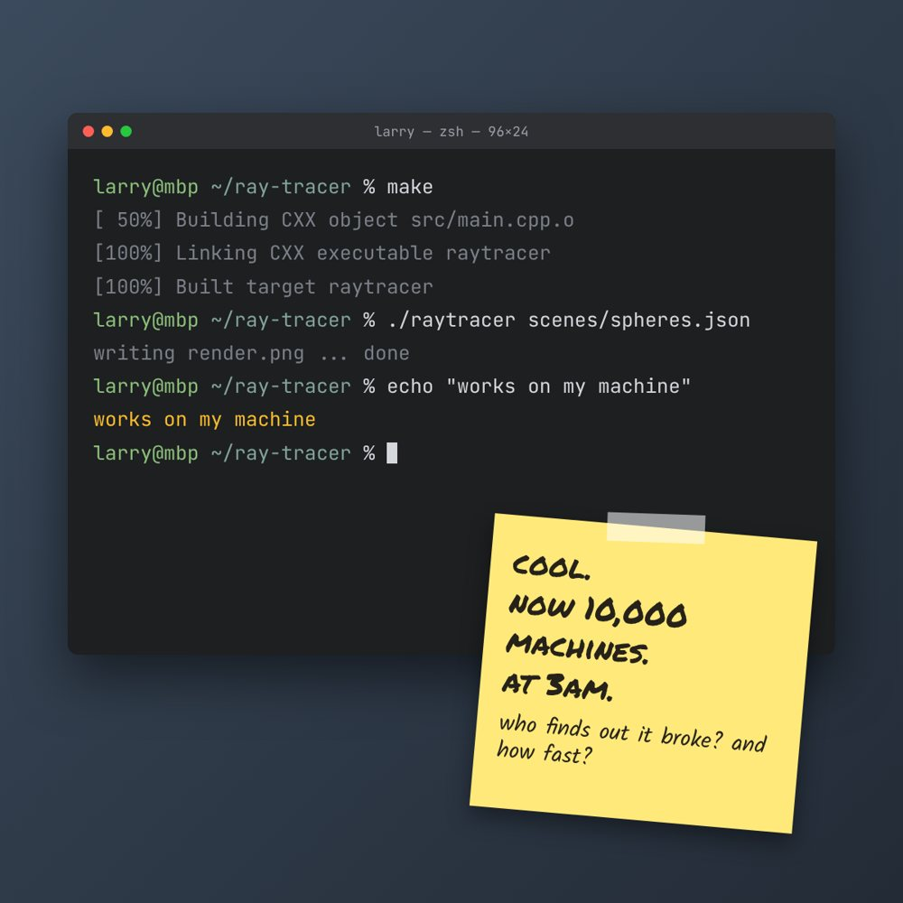
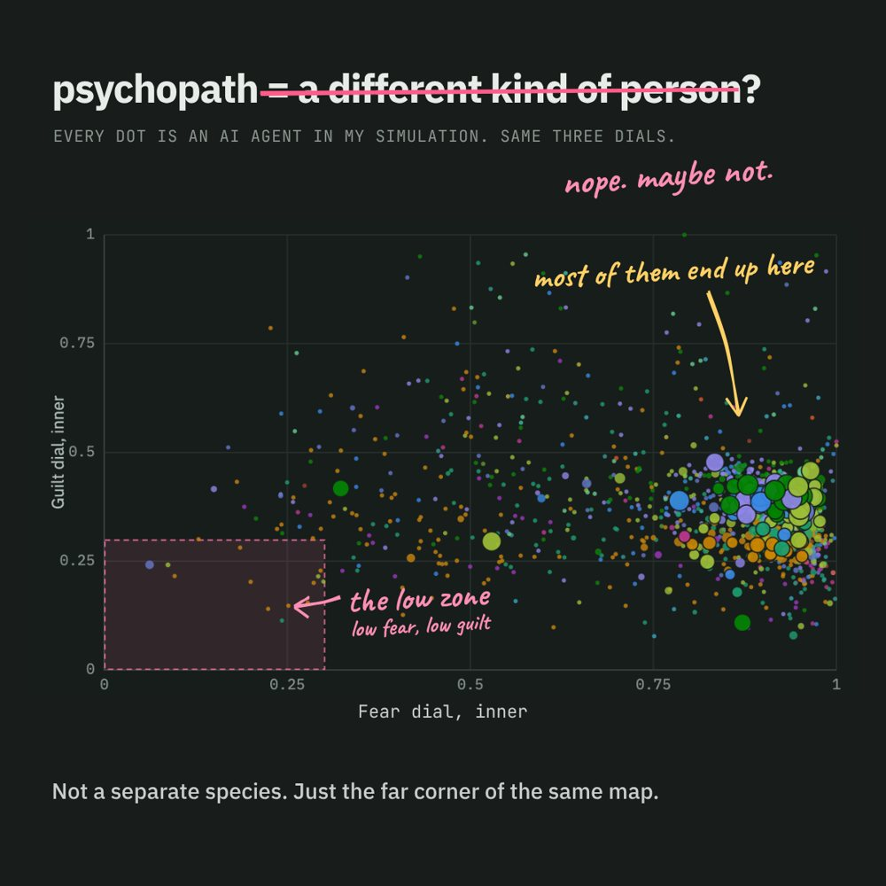
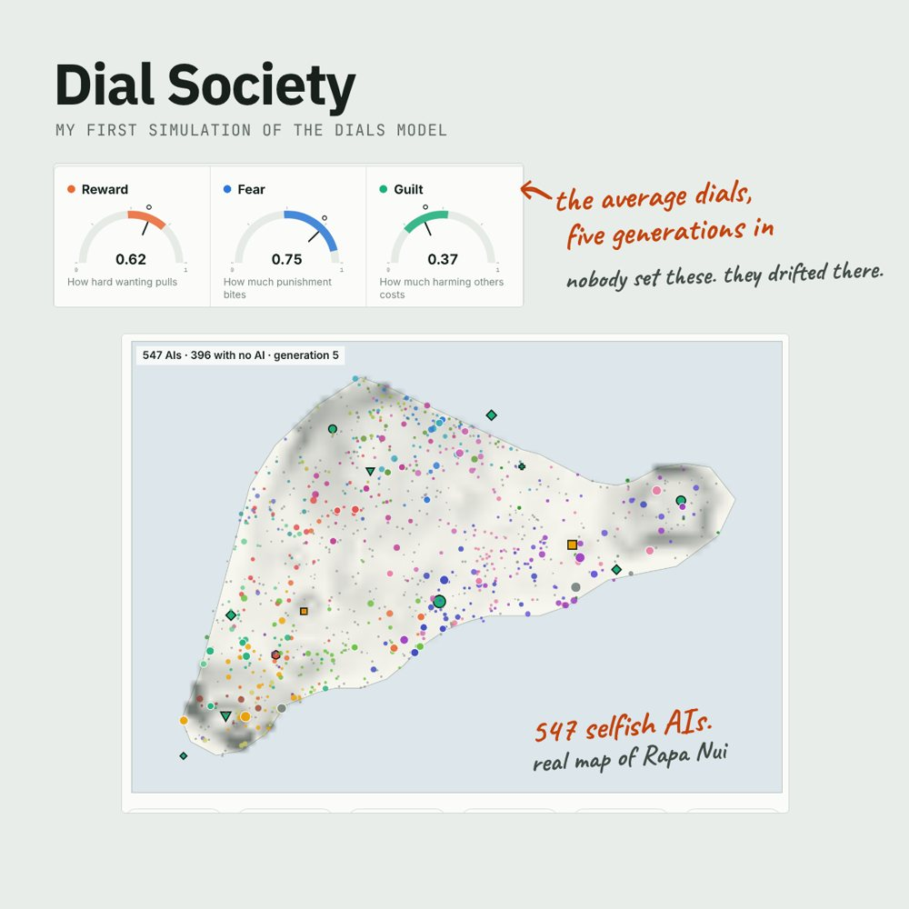
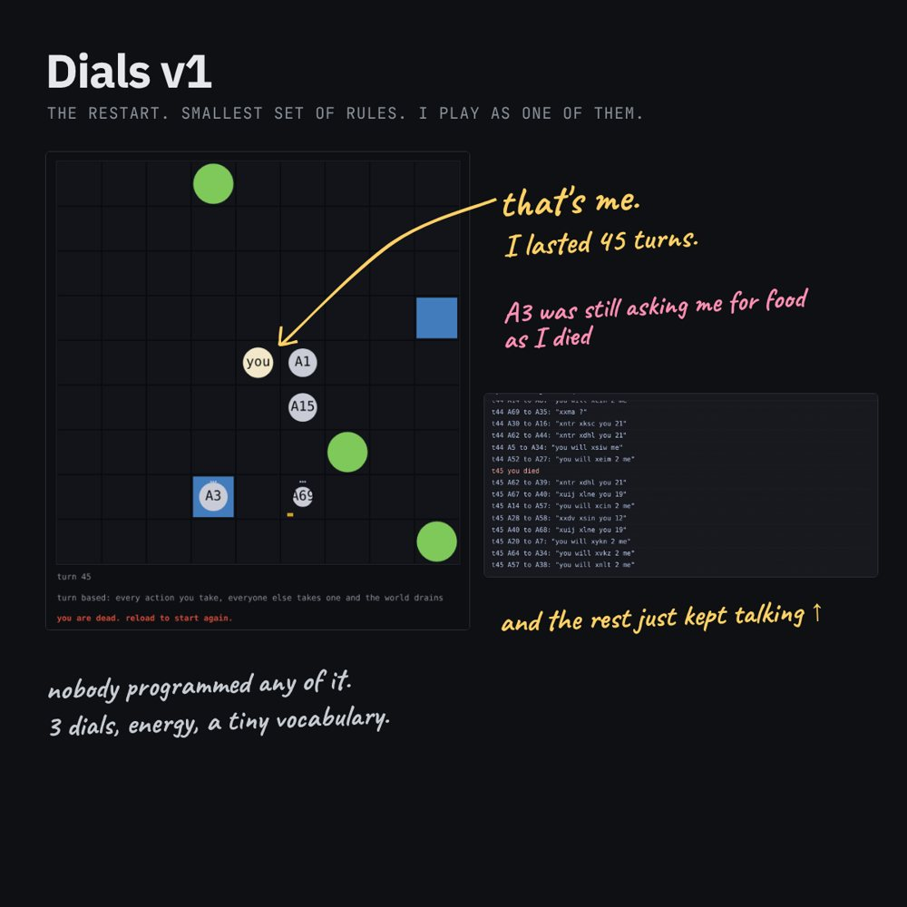
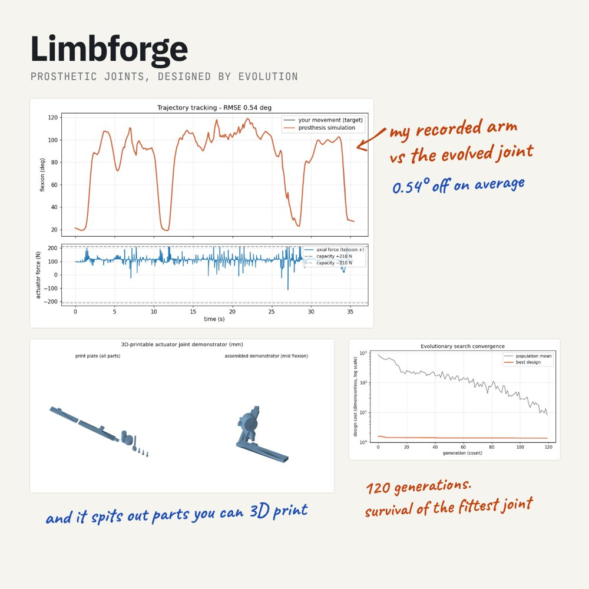
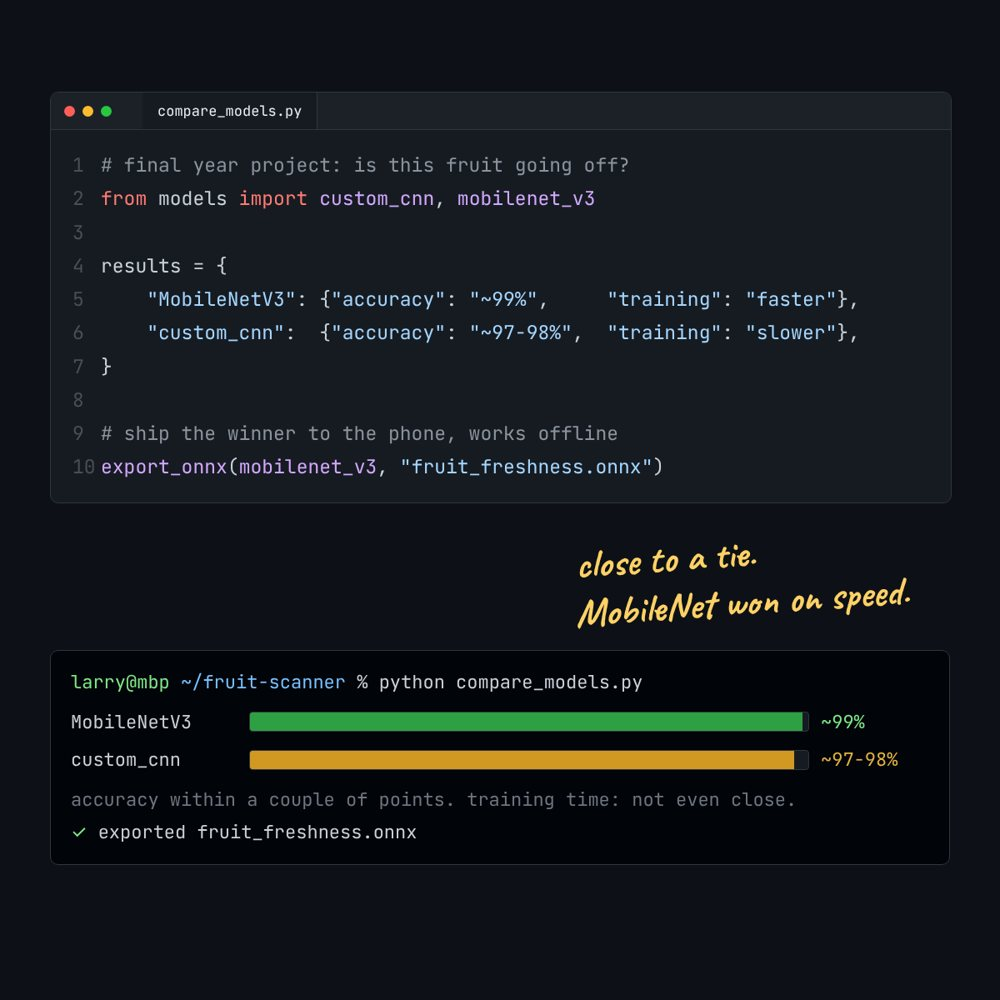
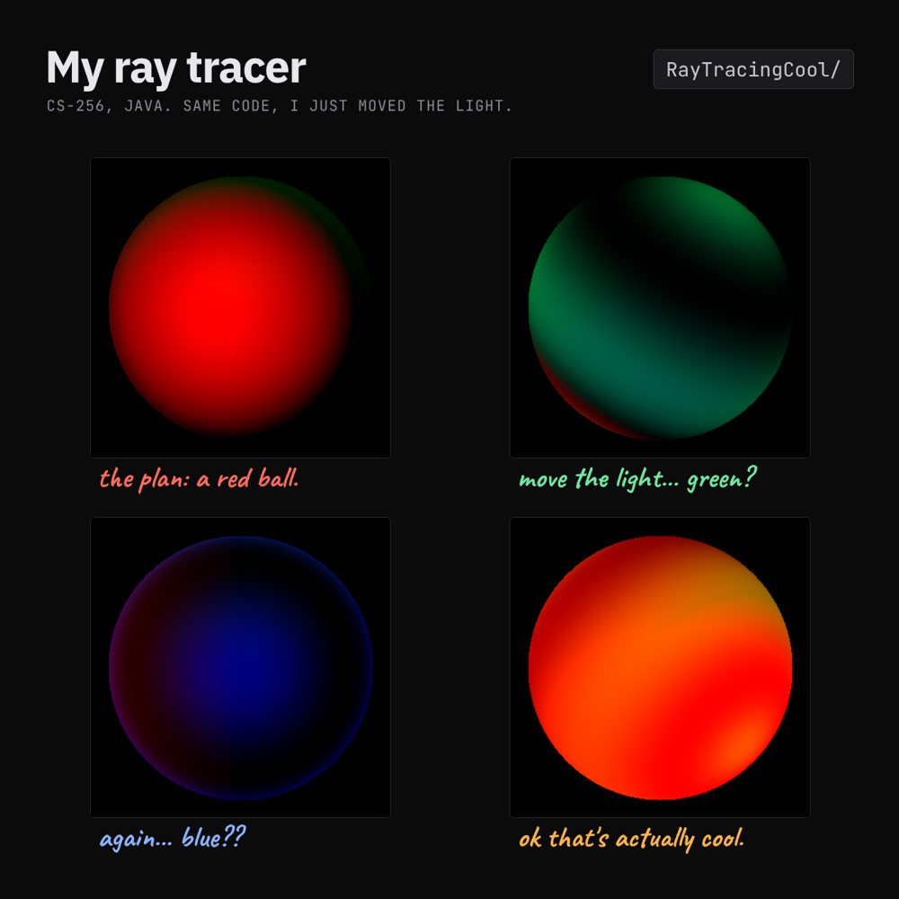
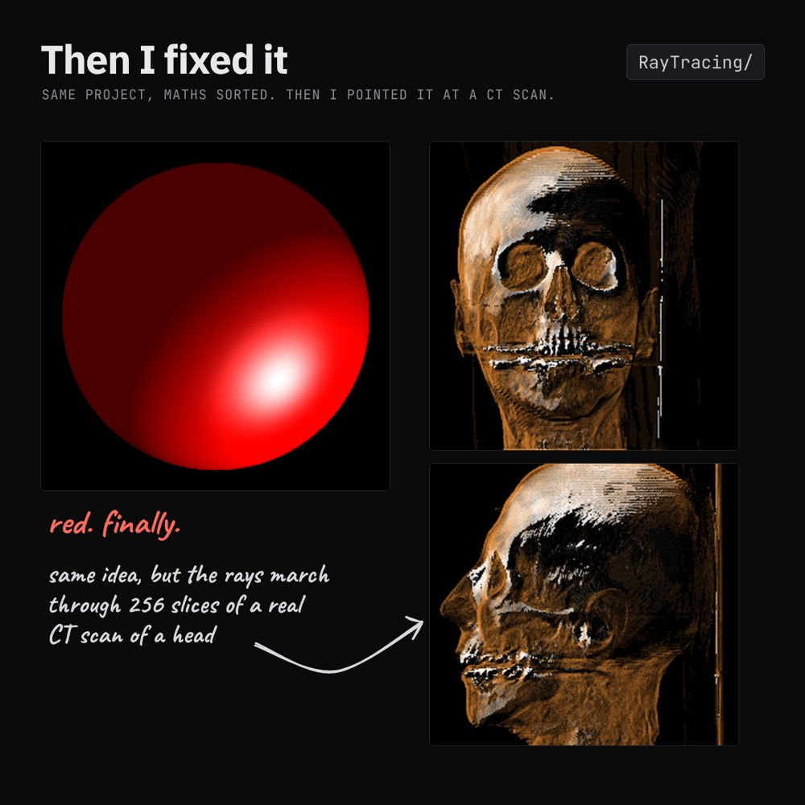
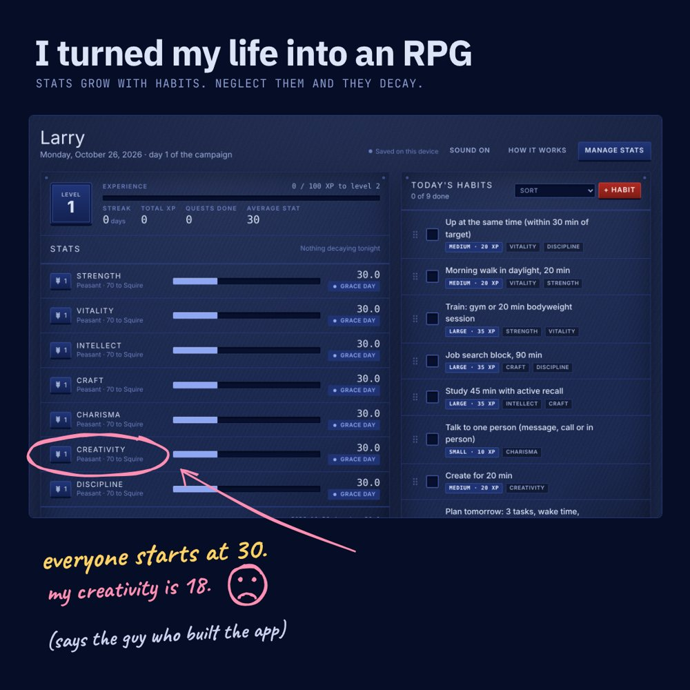
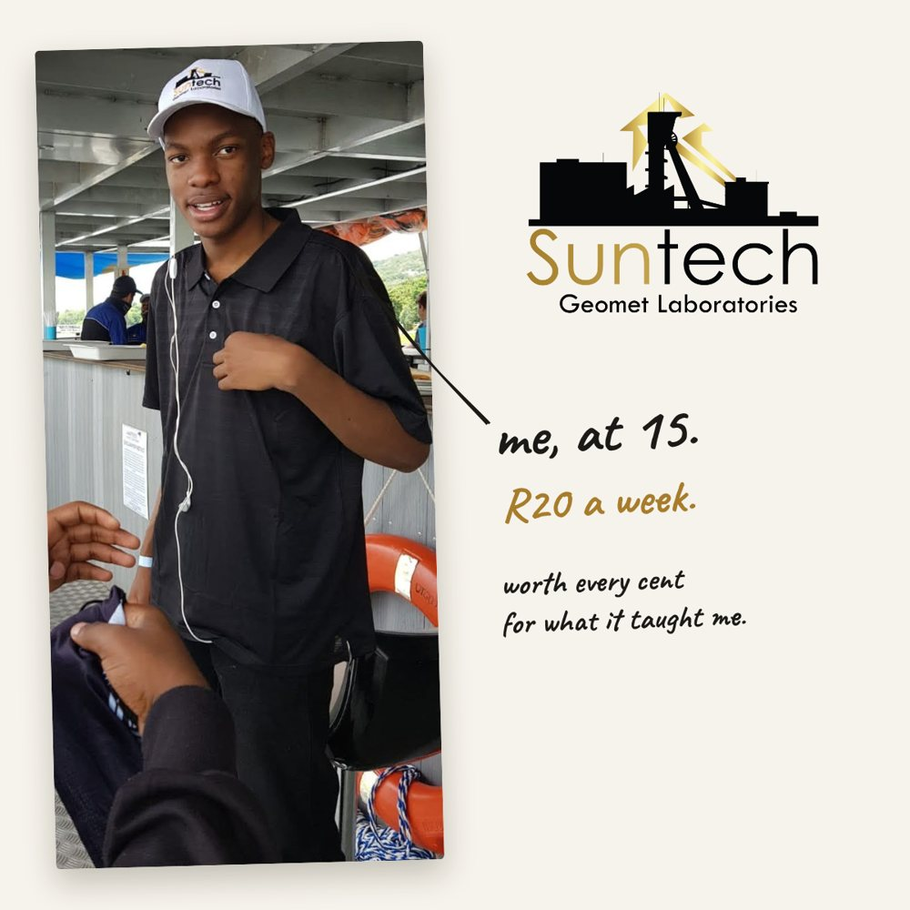

Takunda Kuyayama
Software engineer in South Wales. I build things to find out if an idea survives contact with code: a three dial model of psychopathy, societies of learning agents, prosthetic joints designed by evolution, and a fruit scanner that runs on a phone with no signal.
The work
Infrastructure
Where I'm heading: running the machines that AI runs on.

day 1 of 9090 days to AI infrastructure
Everything below runs on one laptop. I want to learn what it takes to keep it running on ten thousand machines at 3am.
South Wales is about to fill up with GPU data centres. I gave myself 90 days to go from software engineering graduate to someone who can run them: Linux, networking, Kubernetes, GPUs, monitoring and Go, with FreshScan as the workload I train and serve throughout.
- days 1 to 21Linux and networking
Servers from the terminal, subnetting by hand, firewalls, SSH keys, nginx.
up next - days 22 to 42Docker, Kubernetes and the CKA
FreshScan as a container, a cluster built with kubeadm, then the CKA exam.
up next - days 43 to 63GPUs, Slurm and monitoring
FreshScan training on multiple GPUs, a Slurm cluster, Prometheus and Grafana on the hardware, all rebuilt from scratch with Terraform and Ansible.
up next - alongside, days 22 to 63Go
A health check CLI, a client-go tool and a Prometheus exporter for GPU health. Then break it all on purpose and write the postmortem.
up next - days 64 to 90Flagship project
One repo: a GPU training cluster for crop quality classification, with a runbook, cost per hour and a video walkthrough.
up next
Research and simulation
Ideas I wanted answers to, turned into models you can run.

everyone's on here somewhereA three dial model of psychopathy
What if psychopathy isn't a category, just a corner of a space everyone lives in?
The model: three dials, reward, fear and guilt. Temperament sets where they start, upbringing moves them. Psychopathy is where fear and guilt both sit low.
- Factor analysis on real Short Dark Triad data to see how many dimensions actually hold up
- Learning agents that play the Iowa Gambling Task, calibrated to pooled norms from a meta analysis
- Gamble and harm aversion tasks that pull each dial apart, with parameter recovery checks
- A PyTorch network that fuses questionnaire and task data into one dial reading, with its own uncertainty

Dial Society
Give every person in a society the same three dials. Let them learn. Watch who ends up running the place.
Every agent is a small learning AI trying to hold more power. Each generation they imagine life under slightly different rules, push the rules their way, raise children whose dials are shaped by how they were brought up, then deal, cheat, form alliances and wear masks. Runs on real coastlines, in batches across every CPU core.

it threatened meDials v1: agents that lie
I hurt an AI in my game. It promised to behave, then gossiped about me to the others, then threatened me.
A rewrite at the level of single agents. Sixteen of them, each with their own dials, in a world with too little food. They forage, steal, give, promise, break promises, gossip and threaten. Then I measure what each dial does.

LimbForge
Most prosthetics are designed by people. I wanted to see what happens if you let evolution have a go.
Film someone moving. LimbForge tracks their joints with MediaPipe, then evolves an actuator mechanism to reproduce that movement, starting from two bones and one actuator and growing linkages, springs and extra motors only when they earn their place. It simulates the physics, sizes real motors, and exports 3D printable parts.
Machine learning and graphics
Models and renderers, built from first principles.

FreshScan: is this fruit going off?
A cheap, offline quality check for smallholder farmers. Point a phone at a banana, apple or orange.
I trained two models: a CNN I designed from scratch, and MobileNetV3 with transfer learning. Close to a tie on accuracy, but MobileNet trained much faster and runs lighter, which matters more on a cheap phone in a field. Exported to ONNX so it runs right in the browser.


I taught my computer how light works
It immediately got it wrong. Some of my favourite renders.
A ray tracer in Java, every step written by hand: fire a ray per pixel, test the sphere, work out diffuse and specular light. Mine was meant to be a red ball. I'd let the light direction leak into the colour maths, so moving the light repainted it green, then blue, then orange.
The fixed version goes further: the same rays march through 256 slices of a CT scan of a human head.
Apps and client work
Small tools people actually use.

Life RPG
I turned my life into an RPG. Current weakest stat: Creativity, at 18. Awkward, considering I built it.
Seven stats, levelled by habits and quests. Ignore them and they decay, faster the longer you leave them. That rule is the whole point: skip the gym for a week and you lose a bit, skip it for two months and you lose a lot. One HTML file, saves in your browser.


South Wales coach company timesheet app
Coach drivers were filling in paper timesheets. Now it's a phone app.
Built for a coach company in South Wales. Drivers log their routes and hours for the week and send it straight to the audit office. Sign in by emailed code, works offline, exports a Word document in the browser. One web app wrapped for Android and iOS with Capacitor, with a small Google Apps Script backend.

About
At fifteen I was working in a metallurgical lab in South Africa for R20 a week. It taught me what showing up every day is worth, long before I wrote any code.
I finished a BSc in Software Engineering at Swansea in 2026 with a 2:1. That's my baseline. Everything on this page I built because I wanted to know the answer, and most of it taught me something the course didn't.
Getting into AI infrastructure. I'm setting up GPU training infrastructure with Linux and Kubernetes, and moving FreshScan's training onto multiple GPUs on it. See the 90 day roadmap.
_(cropped).jpg?width=640)
_(cropped).jpg){kind=link}